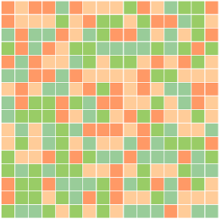

Kubgen is a program that takes your text and turns it into a beautiful, multi-colored square.
It has some interesting properties:
This means you can use the colored square as a digital signature for your text.
This means even adding a space on the end of the text gives you a completely different square
- The number of combinations of colors for this square is 4 to the power of 256, or
13407807929942597099574024998205846127479365820592393377723561443721764030073546976801874298166903427690031858186486050853753882811946569946433649006084096- That number has 155 digits.
- To compare, the number of grains of sand on all the earth's beaches is a number with less than 20 digits.
- And there are like 5 or ten stars in the universe for every grain of sand. So that number is bigger still then the number of grains of sand on earth, mars, and every planet in the universe.
- Interestingly, there are more atoms in a grain of sand then there are grains of sand on all the beaches or stars in the universe.
- Finally, the number of atoms in the universe has at most 82 digits, the number above is still incomprehensibly bigger.
- As Douglas Adams may have put it, the odds of finding two identical squares is about the same as the odds of dropping a ball bearing out of and airplane and having it land on an egg sandwich.
- Yet opening a connection to your bank account uses numbers way bigger.
For example, the text "blarg" produces the hash:10c561e815929839cf1e0dd88c6bfee23179a449f0c5529547d211f0ca2c1671ea1e485977b012d7679d73a8948bcfcebba5196f28fe38c929b216d5be667f1f
In the above number, the hex digit "1" is converted to "01", the "c" (the hex digit for 12) is converted to "30"
If you must know the above number in base 4 is:
0100301112013220011121022120032130330132003131202030122333323202030113212210102133003011110221111013310201013300302202300112130132220132102011211313230001023113121321311303222021102023303330322323221101211233022033320320302102212302011231112332121213330133
which in a nice 16x16 square is:
0100301112013220
0111210221200321
3033013200313120
2030122333323202
0301132122101021
3300301111022111
1013310201013300
3022023001121301
3222013210201121
1313230001023113
1213213113032220
2110202330333032
2323221101211233
0220333203203021
0221230201123111
2332121213330133
which in colors looks like:

Kubegen was written in php and you are welcome to a copy if you are interested. Get it from github